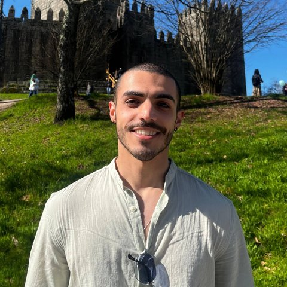

Prof. Hélder Fraga
Scientific supervisor of the project.
Departamento de Agronomia, Universidade de Trás-os-Montes e
Alto Douro (UTAD).

Carlos Roberto Souza Garcia Filho
Research and Development Fellow (BI/UTAD/46/2026).
Master's student in Data Science and Engineering.
Have a question about the project? See the
Contact page.